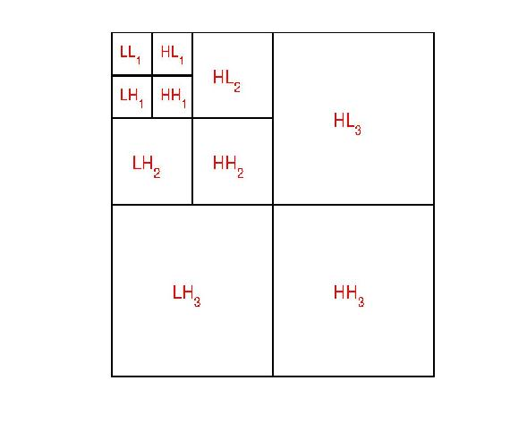
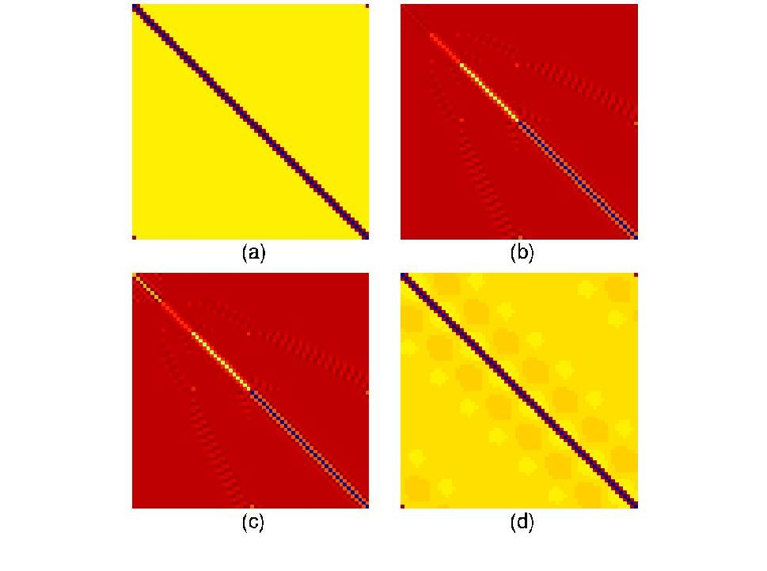
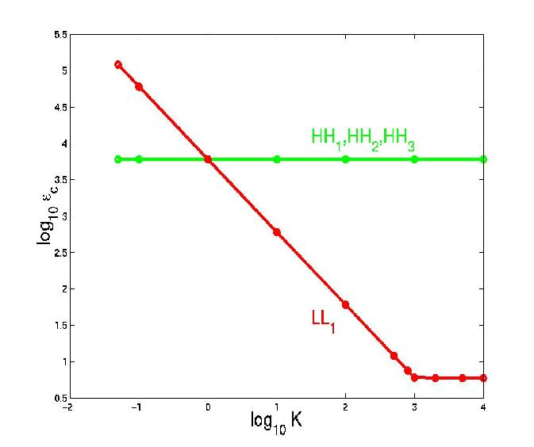
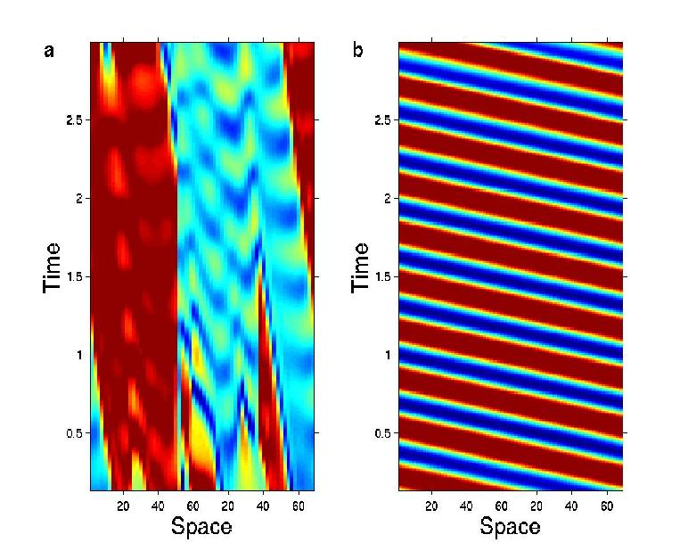

Controlling Chaos
Controlling Chaos
Wavelets andassociated multiresolution analysis have had tremendous impact on signal/imageprocessing, data compression, computer vision, telecommunication and a varietyof other engineering disciplines. Recently, their applications can be seen inmany areas of science, such as the analyses of time series, low-dimensionaldynamics, turbulence cascades, spatial hierarchies in measles epidemics, North Atlantic oscillation dynamics, magnetic flux on theSun, human heartbeat dynamics and characterization of patterns. However, all ofthe aforementioned applications are limited to either wavelet analysis orwavelet characterization. The use of wavelets as the basis in the directcontrol of the system dynamics has not been exploited. In this work, weintroduce wavelet controlled dynamics (WCD) as a new paradigm ofdynamical control. We find that by tailoring a tiny fraction of the waveletsubspaces of a coupling matrix, we could dramatically enhance the transversestability of the synchronous manifold of a chaotic system. Waveletcontrolled Hopf bifurcation from chaos is observed. Our approach providesa robust strategy for controlling chaos and other dynamical systems in nature.

Three-scale waveletdecomposition
The impact of wavelet subspace control ofa coupling matrix. (a) Original coupling matrix; (b) Wavelet representation of the coupling matrix; (c) Wavelet representationof the modified coupling matrix; (d) Physical spaceimage of the modified coupling matrix.

Reduction in critical coupling strengthafter wavelet subspace control based on the coupled Lorentz system.

Wavelet induced Hopf bifurcation fromchaos in the coupled Lorentz system.
Reference:
G.W. Wei, M. Zhan, and C.-H. Lai, Tailoringwavelets for chaos control, Phys. Rev. Lett. 89, 284103(2002). This work was highlighted in PhysicalReview Letters and featured in Nature.